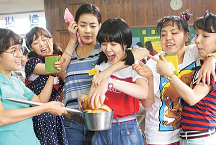
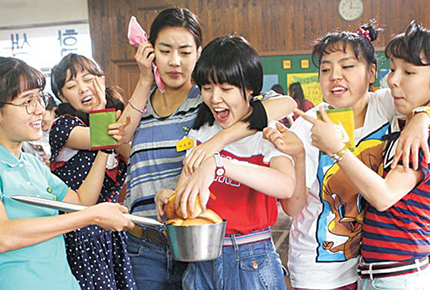

My Favorite Movies
My Favorite Movies
 

2011년, 잘나가는 사업가 남편과 예쁜 여고생 딸을 둔 임나미. 분명 부족한것 없는 인생이었지만 항상 뭔가가 부족하다고 느꼈다. 그러던 어느날, 입원한 엄마의 문병차 간 병원에서 '하춘화'라는 이름이 새겨진 병실을 발견했고 그곳에서 고교동창 춘화를 만난다. 춘화는 폐암을 앓고있었고 길어야 2개월밖에 못사는 상황. 그녀는 세상을 떠나기전, 흩어진 친구들을 다시 만나는게 소원이라고 했고 오랜만에 만난 옛 친구의 성화를 외면할수 없었던 나미는 흥신소를 동원해 오래전 흩어진 친구들의 행방을 추적하기 시작한다. 그러는 사이 그간 잊고 살던 25년전 과거룰 떠올렸다.